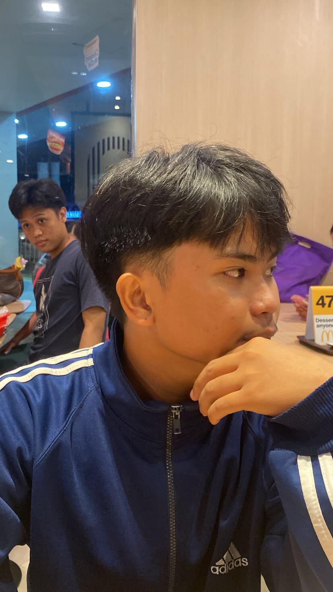
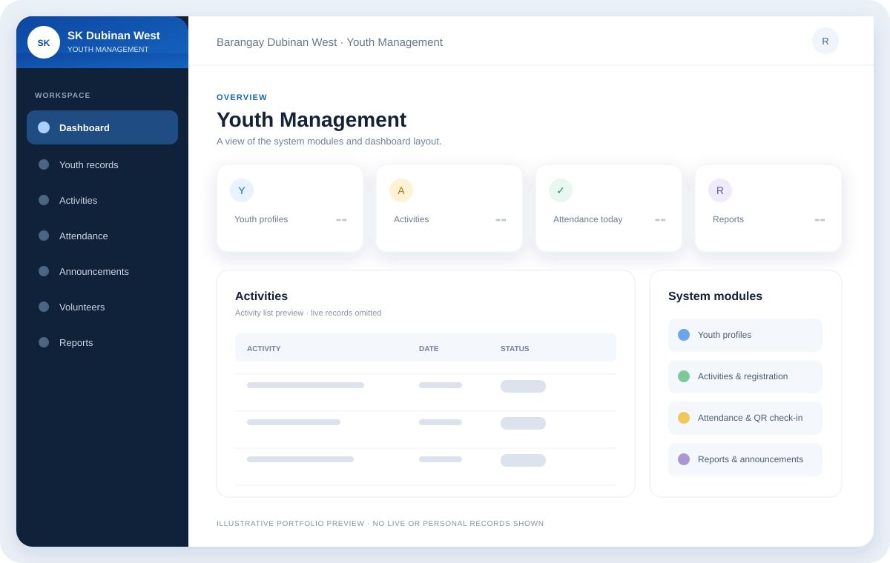
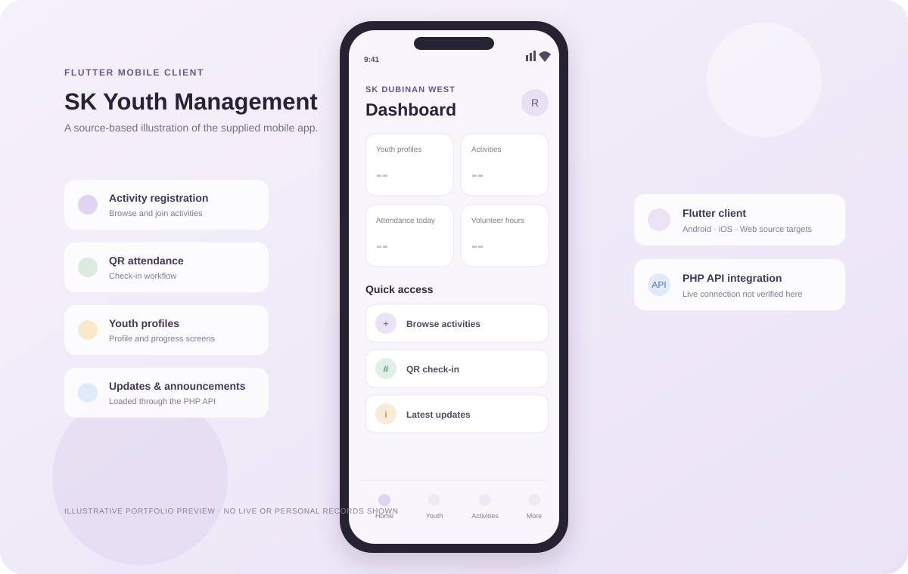
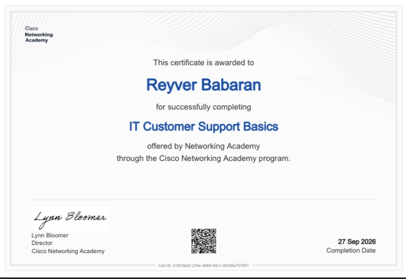
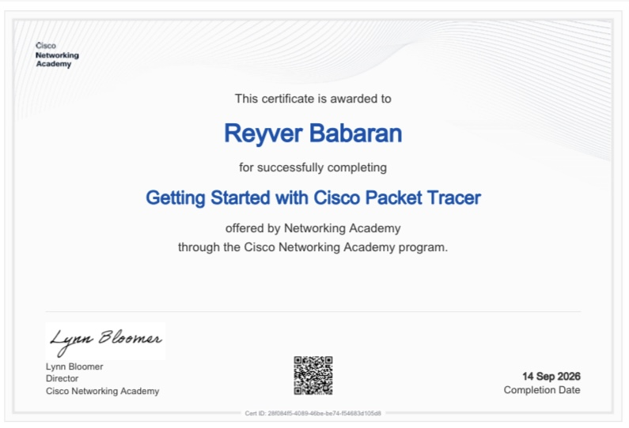
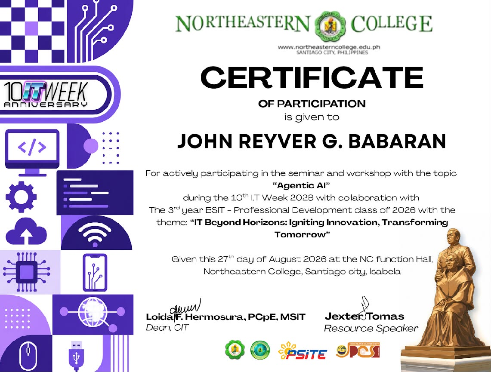
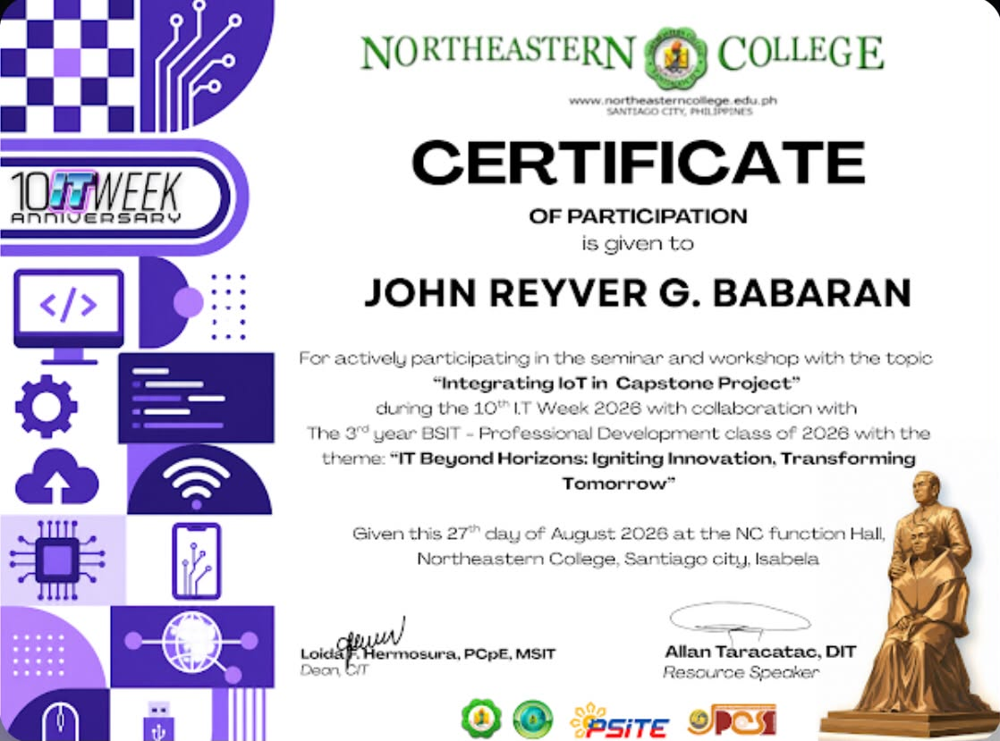
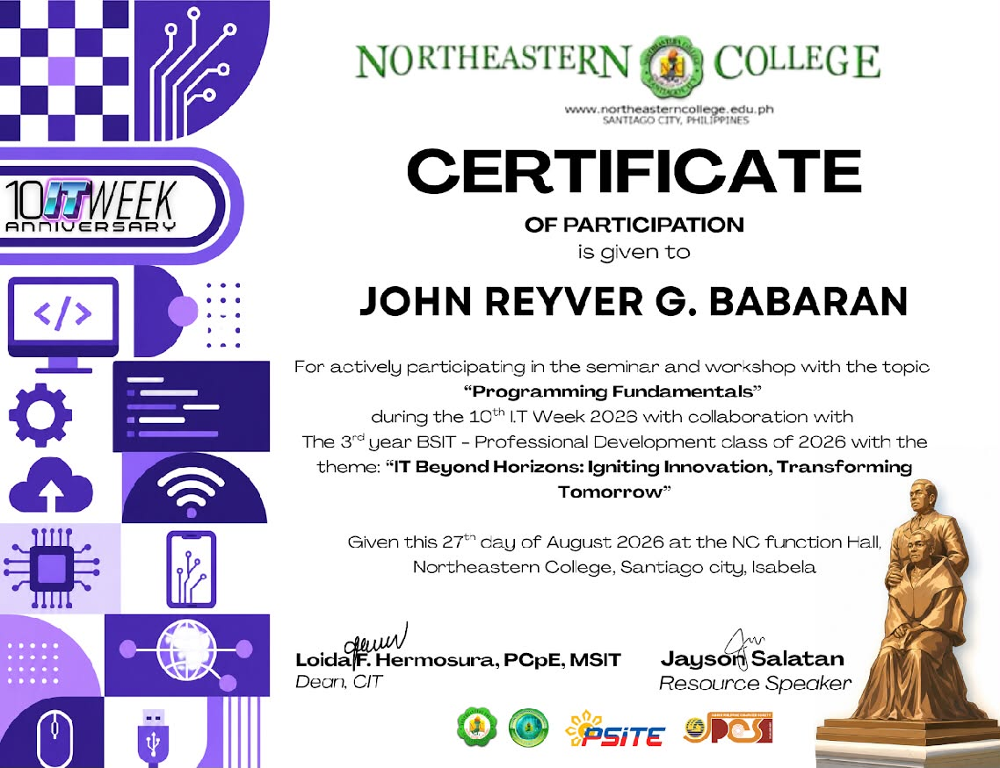

Web development
Building the fundamentals of interactive websites.
IT student · Santiago City, Philippines
One project at a time
I’m Reyver Babaran, a third-year BSIT student who enjoys making useful things with technology from web systems to mobile app ideas.
Currently learning, building, and finding the next problem worth solving.

HELLO, I’M REYVER
I’m a third-year Information Technology student at Northeastern College in Santiago City, Isabela. I’m building my foundation in web and application development and enjoy seeing how thoughtful design and practical code can make everyday tasks easier.
Outside class, I’m into gaming, music, reading, traveling, and video editing. I like learning by trying things, asking questions, and improving a project one step at a time.
More about my journeyWHAT I’M LEARNING
A growing toolkit for turning a problem into something useful. No score bars—just the technologies I’m learning and working with.
Building the fundamentals of interactive websites.
Practicing programming and server-side development.
Working with structured data and common system patterns.
Areas I’m interested in growing through future projects.
SELECTED PROJECTS
My portfolio and two SK Youth Management projects. Preview cards are illustrative, not live screenshots.

ILLUSTRATIVE UI PREVIEWPHP and MySQL web application for youth profiles, activities, attendance, and related barangay services.
The supplied project files describe a system for youth profiles, activities, attendance, volunteers, announcements, and reporting. A live database-backed deployment has not been verified.

ILLUSTRATIVE UI PREVIEWFlutter client for youth registration, activities, QR attendance, and profile features through a PHP API.
The supplied Flutter client includes screens for registration, activities, QR attendance, announcements, and profile or progress features. A live API connection has not been verified.
Responsive website sharing my background, skills, projects, certificates, and contact information.
A personal website that brings my BSIT profile, selected work, certificates, and contact details together in one place.
Every project here reflects something I’m learning, building, and improving.
CERTIFICATES
Course completions and seminar certificates, with their original images and details.

Cisco Networking Academy · September 27, 2026
View certificate ↗
Cisco Networking Academy · September 14, 2026
View certificate ↗
Northeastern College · 10th IT Week 2026 · August 27, 2026
View certificate ↗
Northeastern College · 10th IT Week 2026 · August 27, 2026
View certificate ↗
Northeastern College · 10th IT Week 2026 · August 27, 2026
View certificate ↗Northeastern College · 10th IT Week 2026 · August 27, 2026
View certificate ↗Every certificate marks a new skill learned and another step forward in my IT journey.